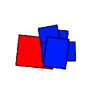
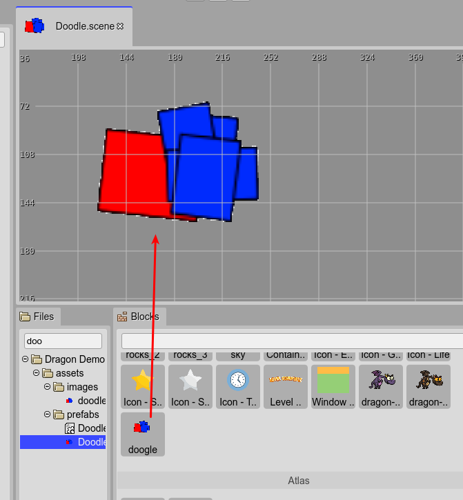
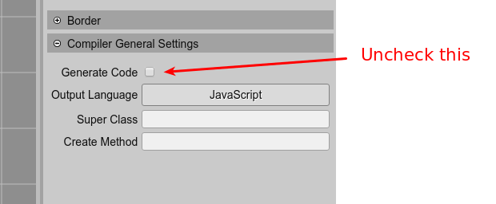
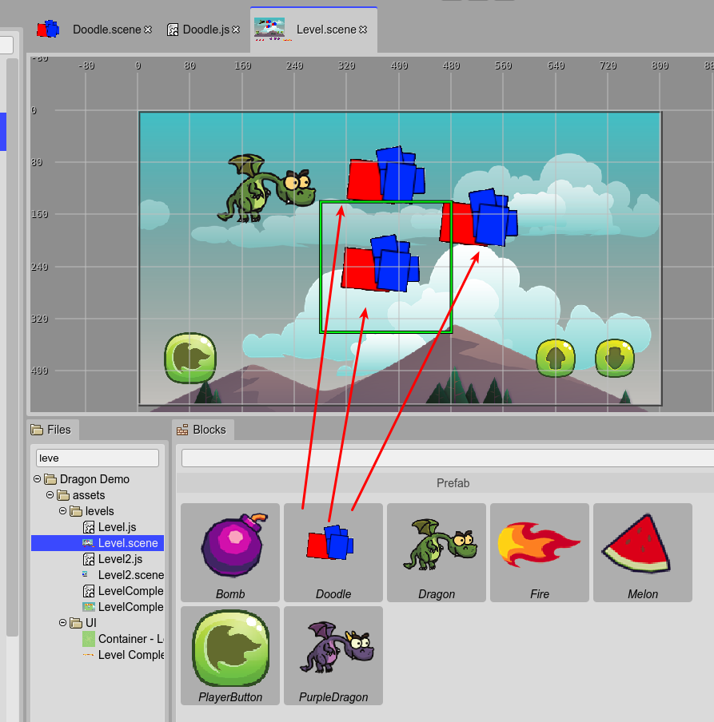
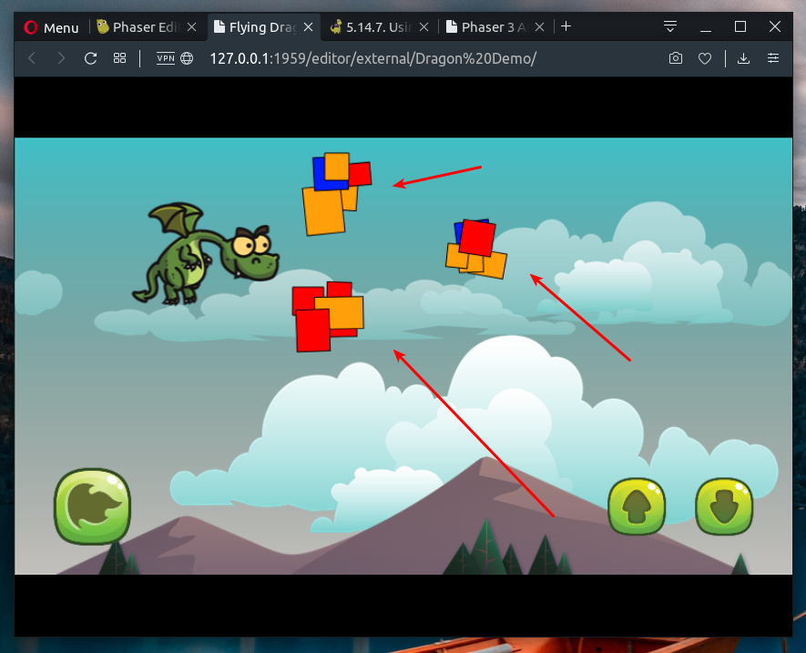

Using a prefab as a black box
At this moment, the Scene Editor supports a small subset of the object types present in the Phaser API. Eventually, we will implement support for all the built-in object types.
However, if you need to add to the scene an object of an unsupported type (a Phaser object type or any other no fully supported by Phaser) you can “cheat” the Scene Editor using a prefab as a black box.
A prefab as a black box is a very simple concept: it is a prefab that is not compiled by the scene compiler, so you should write the code of the prefab class manually.
For example, let’s say you want to add to the scene some objects with a texture that is generated on the fly, with shapes of random colors and positions. Let’s name them “doodles”.
First, create a texture similar to what you want, at least, with the same dimensions (100x100 in this example).
Something like this:
It is a reference texture. Upload it to the project and add it to the Asset Pack file. You can create a new Asset Pack file that will be used only by the editor, so you can exclude it from the distribution build of the game.
So, create a Doodle prefab with the doodle texture:
We have our prefab. But you want to generate the texture on the fly. To do this, first disable the compilation of the scene, in the Scene compiler settings:
Now that you disabled the code compilation, you have to write the Doodle class in the Doodle.js file. It is a simple class, it extends the Phaser.GameObjects.Image but instead of a real image texture it will generate its texture, on the fly:
class Doodle extends Phaser.GameObjects.Image {
static ID = 0;
static COLORS = ["red", "blue", "orange"];
/**
* @param scene {Phaser.Scene}
*/
constructor(scene, x, y) {
super(scene, x, y);
// create a new texture key
Doodle.ID++;
const key = "doodle-" + Doodle.ID;
// create a new canvas-based texture and add it
// to the TextureManager with the new key
const texture = scene.textures.createCanvas(key, 200, 200);
// get the context of the texture and draw the random doodle
const ctx = texture.getContext();
ctx.strokeStyle = "black";
// draw 5 shapes
for (let i = 0; i < 5; i++) {
ctx.save();
// add a little rotation to the shape
const angle = Phaser.Math.RND.integerInRange(-10, 10);
ctx.rotate(Phaser.Math.DegToRad(angle));
ctx.beginPath();
// draw a rect, at a random position with a random size
ctx.rect(
Phaser.Math.RND.integerInRange(0, 50),
Phaser.Math.RND.integerInRange(0, 50),
Phaser.Math.RND.integerInRange(20, 50),
Phaser.Math.RND.integerInRange(20, 50));
// fill it with a random color
const color = Phaser.Math.RND.pick(Doodle.COLORS);
ctx.fillStyle = color;
ctx.fill();
ctx.stroke();
ctx.restore();
}
// needed if the game is using the WebGL renderer
texture.refresh();
// set the new texture to the object
this.setTexture(key);
}
}
The Doodle prefab is ready. Open the Level scene file and add a couple of Doodle prefab instances to it:
Note all Doodle instances look the same. The custom code you wrote is executed in the game, not in the editor. The editor is using the doodle.png image you created as a reference.
Look in the Level.js file: the prefab instances are created as expected. The trick here is that the code inside the Doodle constructor is your code, not the code generated by the scene compiler. You only need to write a constructor signature that is compatible with the code of the Level.js file:
class Level extends Phaser.Scene {
constructor() {
super("Level");
}
create() {
// ...
// doodle
const doodle = new Doodle(this, 388, 105);
this.add.existing(doodle);
// doodle_1
const doodle_1 = new Doodle(this, 380, 240);
this.add.existing(doodle_1);
// doodle_2
const doodle_2 = new Doodle(this, 530, 170);
this.add.existing(doodle_2);
// ...
}
}
So, run the game now: you will see the Doodle instances are rendered with random shapes and colors. The instances are using your custom code and your way to create the textures:
This “black box” trick is not perfect. An ideal editor should run your Doodle custom code and show the prefab instances in the Scene Editor with the custom textures. But it is something very complex to implement.
With a black box prefab, you can do “black magic”. Think that using it you can place 3D objects in the scene, by using a third-party framework and the Extern game object. Or complex 2D objects modeled by animation tools. Or tile-maps created with a Phaser unsupported format.